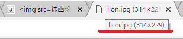
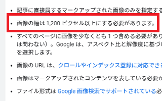

<img src=は画像を表示するhtmlタグ
ホームページに画像を表示するHTMLタグはこのように記述します。
<img src="http://" alt="" width="" height="" border="0">
各要素に画像の情報を記述します。
- srcには画像のあるURL
- altに画像の説明文
- widthに横幅
- heightに高さ
- borderには境界線の指定
例えば、当ホームページでは画像専用の「image」フォルダを作成し、画像ファイルは全てそちらにアップロードしていますが、そこにライオンの画像(lion.jpg)をアップロードしたとします。
その際、ライオン画像のあるURLはこちらになります。
https://www.homepage-tukurikata.com/image/lion.jpg
この場合、このようなHTMLタグを記述すれば、
<img src="https://www.homepage-tukurikata.com/image/lion.jpg" alt="ライオンの画像" width="314" height="229" border="0">
このように画像が表示されます。
枠線の「border="0"」については、スタイルシートの「img」の箇所で指定されていれば、特に記述する必要はありません。
画像サイズは「width」と「height」で指定
画像の大きさの箇所は特に何も指定しなくても表示されるかもしれませんが、古いブラウザによっては表示されないケースもあるため、できるだけ指定しておくことをおすすめします。
<img src="https://www.homepage-tukurikata.com/image/lion.jpg" alt="ライオンの画像" width="314" height="229" border="0">
この画像の大きさにつきましては、ブラウザで画像を右クリックしたのち、新しいタブで開いて直接表示させるとタブの箇所にサイズが表示されているはずです。

右クリックしたのち、Chromeの場合は「新しいタブで開く」、Firefoxの場合は「画像だけを表示」、あるいはSafariの「イメージを新規タブで開く」の箇所になります。IEの場合は画像を右クリックしたのち、「プロパティ」の箇所に大きさが表示されているはずです。
この大きさを指定する際、pxなどの単位を入力せず、100pxならそのまま100と入力します。
小型スマートフォンの画面サイズは「width」で320px
ホームページにレスポンシブウェブデザインを適用してスマートフォンにも対応する場合、小型のiPhone 5/SEの画面サイズは横幅が320pxのため、これ以上の大きさの400pxや500pxなどの画像は崩れて表示されるかもしれません。
そのような場合、スタイルシートでmax-width:100%;などと指定しておくと、スマホの画面サイズに合わせて自動で縮小されるように設定することもできます。いずれにしても、元の画像で320px以下にしておけば、大きく崩れることはないかと思います。
Facebookでの最小サイズは「200px × 200px」以上
ホームページにOGPのmetaタグを設定しておくと、FacebookやTwitterなどのSNSでシェアされた際に画像が綺麗に表示されるようになります。
ただし、Twitterでの最小サイズが「144px × 144px」以上、Facebookでは「200px × 200px」となっているため、両方で適切に表示されるためには、縦・横ともに「200px」以上の画像を使用する必要があります。
概ね、画像サイズについては、縦・横ともに「200px」以上、なおかつ「320px」以下にしておけば、スタイルシートで特に何も設定していない状態でも大きく崩れることはないはずです。
記事の構造化データでは「1,200px」以上
Google検索セントラルによると、記事の構造化データで指定する画像は「1,200ピクセル以上」が推奨されています。

また、画像のアスペクト比についても以下のような指定があります。
「適切な画像が選択されるようにするために、アスペクト比が 16x9、4x3、1x1 の高解像度画像（幅と高さをかけて 800,000 ピクセル以上の画像）を複数指定してください。」
自サイトでは構造化データを設定しているページもあり、現状では640px程度でもエラーにはなっていませんが、今後は1,200px以上が必要になるかもしれません。
構造化データを指定しない場合は特に必要ないかもしれませんが、のちのち大きなサイズの画像が必要になるかもしれませんので、撮影した画像の元データについては保持しておくことをおすすめします。
画像の枠線やセンタリングなどのスタイルの指定
■画像の枠線の指定
上記のタグで「border="0"」にすると枠線は表示されませんが、border="0"の代わりにstyle="border: solid 1px #000000;"などと指定すると枠線ありになります。
<img src="https://www.homepage-tukurikata.com/image/lion.jpg" alt="ライオンの画像" width="314" height="229" style="border: solid 1px #000000;">
例えば、さきほどの上記の画像に、枠線を黒の4pxの実線で指定するとこのようになります。
style="border: solid 1px #000000;"の部分にて、実線の枠線の場合はsolid、太くしたい際には2pxとか、青にしたい場合は#0000ffなどと調節することができます。
ちなみに、当サイトでは黒ではなく、灰色で指定して「style="border: solid 1px #ccc;"」のようにしています。
■画像のセンタリング・中央寄せ
画像を表示する際、上記の<imgタグを<p>タグでくくるケースが多いと思いますが、中央に寄せる場合は、その<p>タグに style="text-align:center;" を付けるとセンタリングされます。
例えば、このように記述します。
<p style="text-align:center;"><img src="https://www.homepage-tukurikata.com/image/lion.jpg" alt="ライオンの画像" width="314" height="229" border="0"></p>
すると、このようにセンタリングされて表示されます。
「style="text-align:center;"」のcenterでセンタリング、rightで右寄せ、leftで左寄せです。
スタイルシートで指定する場合
スタイルシートに記述する際は、imgタグ内のborder: 0;を削除し、CSSで以下のように指定するとよいでしょう。
■枠線なし
img {
border: 0;
}
■枠線あり
img {
border: solid 1px #000000;
}
この場合、すべてのimgタグに設定が反映されます。
■個別に指定する場合
特定の画像のみに枠線を付けたい場合、class属性などで指定して個別に設定するとよいかと思います。
<img src="https://www.homepage-tukurikata.com/image/lion.jpg" alt="ライオンの画像" width="314" height="229" class="example">
.example {
border: solid 1px #000000;
}
■センタリングする場合
センタリングする際には<p>タグなどにclassを指定するとよいでしょう。
<p class="example"><img src="https://www.homepage-tukurikata.com/image/lion.jpg" alt="ライオンの画像" width="314" height="229" border="0"></p>
.example {
text-align:center;
}